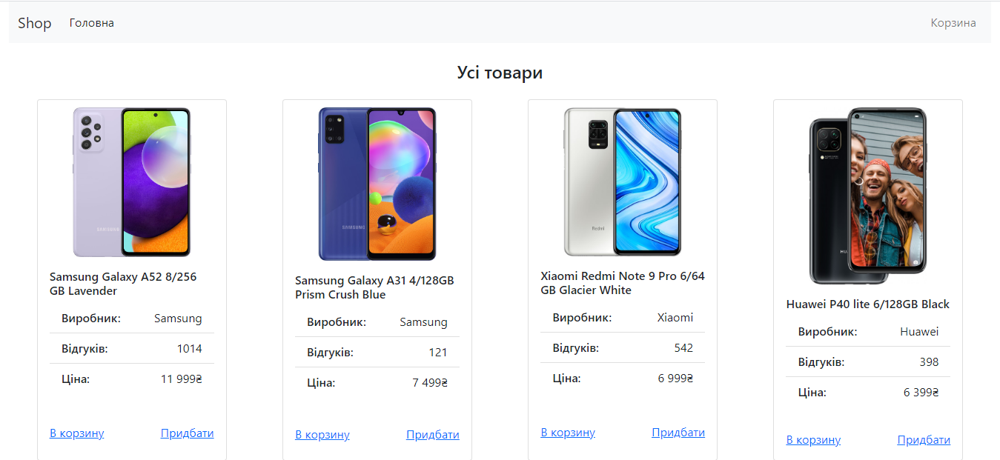
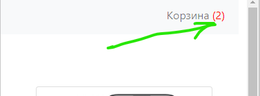
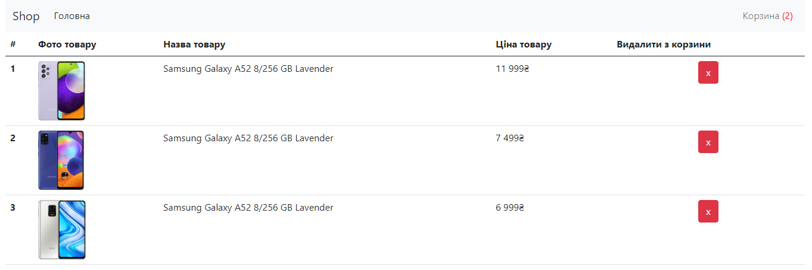
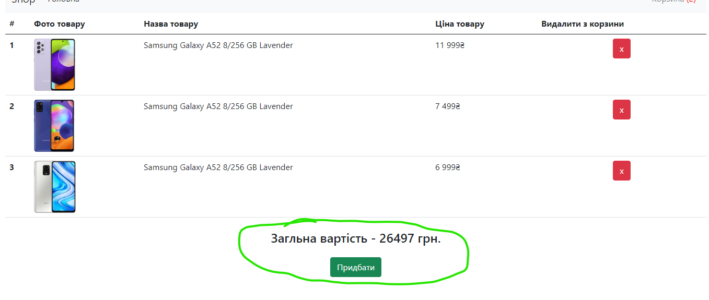

Тема 25

2. Відобразіть товари із даного масиву на головну сторінку array.js
3. Створіть функцію addToCart() яка буде додавати вибраний товар у окремий список та зберігатиме цей список у localstorage.
4. Створіть функцію getCartProducts() яка повертатиме список збережений у localstorage. Використовуйте цю фунцкцію у надалі.
5. Створіть функцію showProdsInCart() яка буде відображатиме кількість товарів у корзині (у localstorage).

6. На сторінці "корзина" відобразіть вибрані товари.

7. Створіть функцію removeProduct() для видалення товару з корзини.
8. Відобразіть загальну вартість покупки
